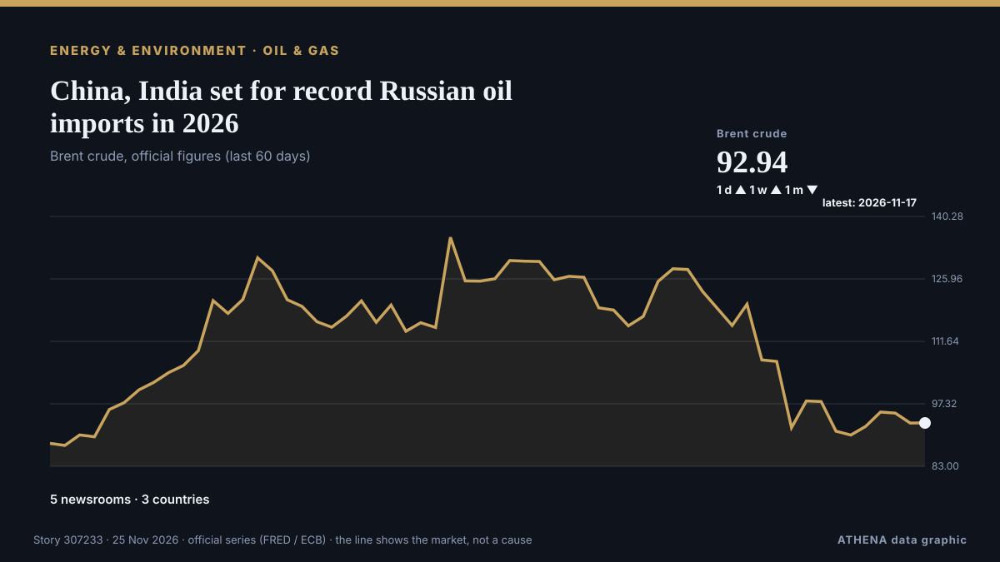

Énergie, ressources et environnement
SponsoriséPrésenté par  Cybernetics and Artificial Intelligence Lab Welcome to the Cybernetics and Artificial Intelligence Laboratory, established at the Department of Business Administration of the National and Kapodistrian University of Athens. The lab is headed by Professor Dimitrios Thomakos. The lab aims to do research that can be published in top venues. Our research uses tools and methods of Artificial Intelligence, and lies in the following areas: - Forecasting - Decision making - Cyber security - Finance We are always looking forward to collaborating with exceptional students!
Cybernetics and Artificial Intelligence Lab Welcome to the Cybernetics and Artificial Intelligence Laboratory, established at the Department of Business Administration of the National and Kapodistrian University of Athens. The lab is headed by Professor Dimitrios Thomakos. The lab aims to do research that can be published in top venues. Our research uses tools and methods of Artificial Intelligence, and lies in the following areas: - Forecasting - Decision making - Cyber security - Finance We are always looking forward to collaborating with exceptional students!
Les titres sont affichés en anglais, tels que publiés.

Pétrole et gazChina, India set for record Russian oil imports in 2026
China and India are on track for record Russian oil imports this year, plugging a supply gap caused by the Iran war, as US sanctions waivers eased purchases and Ukrainian drone attacks knocked out… de Business Recorder
| 12 nov. | 90 |
|---|---|
| 13 nov. | 74 |
| 14 nov. | 42 |
| 15 nov. | 51 |
| 16 nov. | 109 |
| 17 nov. | 88 |
| 18 nov. | 85 |
| 19 nov. | 80 |
| 20 nov. | 53 |
| 21 nov. | 43 |
| 22 nov. | 35 |
| 23 nov. | 75 |
| 24 nov. | 61 |
| 25 nov. | 14 |
29 miners believed trapped by flooding in an unauthorized gold mine in Indonesia
JAKARTA, Indonesia, Nov 25, (AP): Rescuers were searching Wednesday for 29 miners believed trapped by flooding more than a day earlier in an unauthorized gold mine in Indonesia.... de Arab Times
Nigeria absent at closing plenary
The development made COP31 the longest climate summit in the convention's history and arguably one of the most criticised in recent years. de Premium Times
Iraq PM sacks senior officials over oil smuggling scandal
Iraq's prime minister has sacked senior officials over an oil smuggling investigation and ordered tighter federal control over Kurdistan's oil exports. de The New Arab
IAEA reports another loss of external power supply at ZNPP
The Zaporozhye Nuclear Power Plant switched to emergency diesel generators. de TASS (English)
Pope Leo XIV calls collapse of COP31 climate talks in Turkey ‘worrying’
Pope Leo XIV on Wednesday called the failure of the United Nations’ COP31 climate talks in Turkey “worrying,” saying the climate crisis affects millions of people. de Turkish Minute
UK Energy Price Cap Jumps 26% in January, Highest Since 2023
Energy prices for UK households will surge by 26% from January 1 as the Middle East war is pushing wholesale gas prices higher, the UK’s energy regulator Ofgem said in its quarterly energy cap… de OilPrice.com
Nepal flood victims' families may wait up to a year for death certificates
KUALA LUMPUR: Families of Malaysians missing in the Nepal floods could face another three to 12 months, or longer, to obtain certificates of presumption of death, Malaysia Solidarity Families in Hope… de New Straits Times
11 injured after Houthi drone hits Riyadh’s tallest tower
A Houthi drone struck the tallest building in Riyadh, Saudi Arabia, injuring 11 people, according to Saudi officials. de BNO News
China courts Global South with climate cooperation push at COP31
China made South-South climate cooperation central to its COP31 message, pledging clean energy, resilience and training support to developing countries. de Eco-Business
UKRAINE PROTESTS SANCTIONED RUSSIAN OFFICIAL’S APPOINTMENT TO IAEA LEADERSHIP
Foreign Minister Andrii Sybiha branded Ferapontov's appointment as IAEA deputy director general "absurd," and described him as "an accomplice in one of the greatest threats and gravest crimes against… de Kyiv Independent
The US Army will be detonating a 5-ton stockpile of lead azide in Iowa. Here's what to know
The U.S. Army says it's taking numerous precautions as it prepares to detonate 5 tons of degraded and dangerous lead azide in southeastern Iowa. de The Independent
Australia reaffirms Pacific climate commitment despite COP31 outcome
AUSTRALIA reaffirmed its commitment to advancing Pacific climate priorities despite the outcome of COP31 falling short of regional... de Islands Business (Fiji)
“K” LINE Signs Contract for Construction of Two LPG Dual-Fuel VLGCs
Kawasaki Kisen Kaisha, announces today that it has signed agreements with South Korea-based HD Hyundai Samho regarding the construction of. de Cyprus Shipping News
England logged record 5,258 heat-linked deaths this summer: health agency
England registered 5,258 deaths linked to this summer's heat, the highest number of such fatalities on record, the UK's Health Security Agency (UKHSA) said in estimates released Tuesday. de Citizen Digital
China extends pause in controls on critical mineral exports to US
Beijing’s dominance of supply chains has given it leverage against Washington. de Financial Times - Markets
Panama says First Quantum accepts conditions for talks on reopening Cobre Panama mine
PANAMA CITY, Nov 23 - Panama's government said on Monday that miner First Quantum Minerals accepted the government's conditions for negotiations on reopening the Cobre Panama copper mine, which… de The Straits Times
Iraq targets oil smugglers, orders Kurdish oilfield takeover
Iraq's Prime Minister Ali al-Zaidi has ordered federal forces to take control of oilfields in Kurdish-controlled areas. de Al Jazeera English
India in French giant Saint-Gobain's top 5 markets
Air Liquide Egypt has started supplying Saint-Gobain’s glass manufacturing facilities in Ain Sokhna through an integrated industrial gases pipeline network, under a new long-term agreement supporting… de Daily News Egypt
Caricom disappointed at outcome of COP31
GEORGETOWN, Guyana (CMC) — The 15-member Caribbean Community (Caricom) grouping Monday expressed “its deep disappointment” that delegates who attended the United Nations Climate Change Conference… de Jamaica Observer
Gas Supply Imbalance Threatens 11 Iranian Provinces This Winter
The Managing Director of the National Iranian Gas Company (NIGC) warned of gas supply imbalances expected to affect 11 out of Iran’s 31 ... de IranWire
The climate card China has yet to play
No region has been as vocal and consistent on impact of climate change on habitability and migration as the Pacific. de Post-Courier (PNG)
Democrats win largest US House majority since 1992: media
Democrats have won the largest majority in the US House of Representatives in more than three decades, after Chuck Hubbard defeated Republican representative Virginia Foxx in North Carolina, US media… de Vanguard
Vitol to Start Construction on $2.3b South African LNG Project in 2028
A consortium led by Vitol's Engen unit expects to begin construction of a 40 billion rand ($2.3 billion) integrated LNG-to-power project in South Africa late in 2028, the global commodities trader… de MarineLink
San Francisco faces historic flood threat as major storm nears
San Francisco is bracing for potentially historic coastal flooding this week as unusually high tides and an approaching storm threaten to inundate roads and low-lying neighborhoods during the busy… de Livemint
COP31 ends in failure as countries split over fossil fuels, climate finance
COP31 ended without a consensus deal for the first time since 2009. de Ars Technica
‘Worst COP ever’: Climate talks collapse after draft deal fails to include fossil fuels
Governments and campaigners rejected the "cover decision" drafted at the U.N.'s climate summit, COP31, on Sunday. de CNBC World
Musadik Malik visits Humayun’s tom in India
Viral clip falsely claims Musadik Malik blamed Pakistan's army for rising terrorism during a Delhi speech. de Express Tribune
Israel's bombardment has turned Gaza into 'toxic wasteland'
New research suggests more than 99 per cent of the Gaza Strip shows signs of contamination from Israeli attacks. de ABC News Australia
Magnitude 5.3 earthquake strikes Nepal, rattles eastern India
There were no immediate reports of casualties or damage. de TASS (English)
Samsung and DNV team up on nuclear-powered LNG carrier
Samsung Heavy Industries, Tesser Atomics, NTNU and DNV to develop nuclear-powered LNG carrier concept for transatlantic trade. de Seatrade Maritime
HMM signs green shipping deal with Nextpower
South Korean shipping company HMM said Monday it had signed a deal allowing US solar technology company Nextpower to reflect emissions reductions from HMM’s use of lower-carbon marine fuels in its… de Korea Herald
Kuala Lumpur otters raise river revival hopes
Beneath a tangle of highway in the Malaysian capital, a family of otters rolls around in a patch of riverside sand, delighting the few passersby who notice them. de Mongabay
Key outcomes agreed at the UN climate talks in Antalya
The COP31 climate talks in Antalya, Turkey, have failed to reach agreement on a “pact” that lacked clear references to… de Carbon Brief
Power Supply Situation in Odesa Region Remains Difficult
Following Russia's massive overnight attack on November 20, energy workers have managed to partially stabilise electricity supplies in the affected regions, but the situation remains difficult in the… de Ukrinform (English)